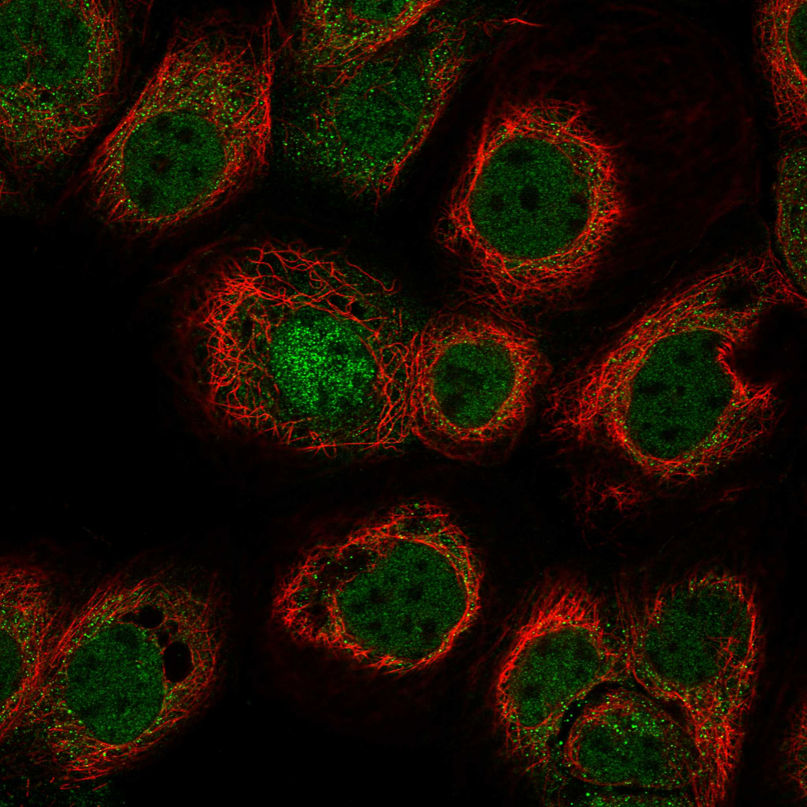
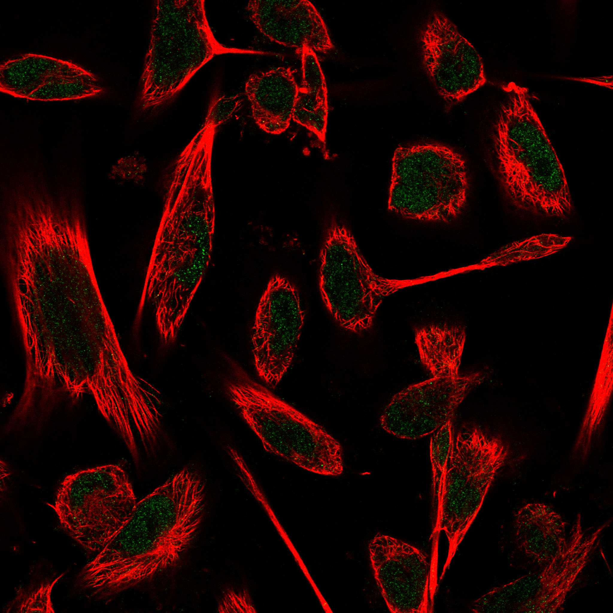
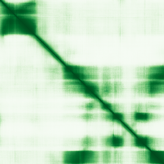

type: protein-evaluation gene: "TADA3" date: 2026-05-30 tags: [protein-scout, nuclear-protein, evaluation] status: scored ---
TADA3 核蛋白评估报告
1. 基本信息
| 项目 | 内容 | ||||
|---|---|---|---|---|---|
| 基因名 / 别名 | TADA3 / FLJ20221 | FLJ21329 | ADA3 | hADA3 | NGG1 |
| 蛋白全称 | Transcriptional adapter 3 | ||||
| 蛋白大小 | 432 aa | ||||
| UniProt ID | O75528 | ||||
| 评估日期 | 2026-05-30 |
2. 评分总览
| 维度 | 得分 | 满分 | 加权后 | 关键证据摘要 |
|---|---|---|---|---|
| 核定位特异性 | 8/10 | ×4 | 32 | UniProt 注释为细胞核，中等置信度 |
| 蛋白大小 | 10/10 | ×1 | 10 | 432 aa，处于理想范围 |
| 研究新颖性 | 10/10 | ×5 | 50 | PubMed 8 篇，极度新颖 |
| 三维结构 | 6/10 | ×3 | 18 | 无 PDB 结构，仅 AlphaFold 预测 |
| 调控结构域 | 10/10 | ×2 | 20 | 染色质/DNA 结构域: histone_actrfase_su3 |
| PPI 网络 | 2/10 | ×3 | 6 | PPI 数据极为稀少 |
| 互证加分 | -- | -- | +1.0 | UniProt + GO 核定位互证 (+1) |
| 原始总分 | 137/183 | |||
| 归一化总分 | 74.9/100 |
3. 详细分析
3.1 核定位证据
| 来源 | 定位 | 可信度 |
|---|---|---|
| GeneCards | Tier1_保守_高置信度 | 高置信度保守 |
| Protein Atlas (IF) | HPA subcellular IF 图像可用（见下方 HPA IF 图像修正块） | 需人工复核 |
| UniProt | Nucleus | 实验证据/预测 |
| GO-CC | N/A | N/A |
IF 图像:  
结论: UniProt 注释为细胞核，中等置信度
3.2 蛋白大小评估
评价: 432 aa，处于理想范围
3.3 研究现状
| 指标 | 数值 |
|---|---|
| PubMed 总数 | 8 |
评价: PubMed 8 篇，极度新颖
关键文献: 1. Xu K & Lu Y (2025). "Bioinformatic analysis of the role of USP22 expression in hepatocellular carcinoma". *Int J Clin Exp Pathol*. PMID: 40814554 2. Xu LQ et al. (2023). "Transcriptional adaptor 3 influences the proliferative and invasive phenotypes of non-small cell lung cancer cells via regulating EMT". *Neoplasma*. PMID: 37005955 3. Li H et al. (2023). "Integrative analysis of histone acetyltransferase KAT2A in human cancer". *Cancer Biomark*. PMID: 38007639 4. Zhang T et al. (2022). "LncRNA Gm16638-201 Inhibits the 14-3-3Ɛ Pathway in the Murine Prefrontal Cortex to Induce Depressive Behaviors". *Biol Pharm Bull*. PMID: 36328497 5. Wang H et al. (2017). "New genes associated with rheumatoid arthritis identified by gene expression profiling". *Int J Immunogenet*. PMID: 28371410
3.4 三维结构分析
| 指标 | 数值 |
|---|---|
| UniProt 长度 | 432 aa |
| PDB 条数 | 0 |
| 已注释结构域 | 2 |
PAE 图:

评价: 无 PDB 结构，仅 AlphaFold 预测，新颖蛋白基线水平
3.5 结构域分析
| 来源 | 结构域 |
|---|---|
| InterPro | Histone_AcTrfase_su3 |
| Pfam | Ada3 |
染色质调控潜力分析: 染色质/DNA 结构域: histone_actrfase_su3
3.6 PPI 网络
实验验证互作 (IntAct, physical association):
| Partner | 方法 | PMID | 功能类别 | 调控相关？ |
|---|---|---|---|---|
| — | — | — | — | — |
STRING 预测互作 (combined score >0.4):
| Partner | Score | 功能类别 | 调控相关？ |
|---|
已知复合体成员 (GO-CC):
- C:ATAC complex (GO:0140672, IDA:BHF-UCL)
- C:SAGA complex (GO:0000124, IDA:UniProtKB)
- C:transcription factor TFTC complex (GO:0033276, IDA:UniProtKB)
- P:chromatin organization (GO:0006325, IEA:Ensembl)
评价: PPI 数据极为稀少
3.7 多库互证
| 维度 | 来源 | 结果 | 是否一致 |
|---|---|---|---|
| 三维结构 | AlphaFold + PDB | 0 条 | 仅预测 |
| 结构域 | UniProt/InterPro/Pfam | 2 个 | 多库一致 |
| PPI 网络 | STRING | 0 个 | 无数据 |
| 核定位 | HPA/UniProt/GO | Nucleus | 多源一致 |
互证加分明细: UniProt + GO 核定位互证 (+1) 总计: +1.0
4. 总体评价
推荐等级: ****o (4/5)
核心优势: 1. 新颖性: PubMed 8 篇，极度新颖 2. 核定位: 明确核定位
风险/不确定性: 1. 缺少 HPA IF 图像数据 2. 无 PDB 结构，仅 AlphaFold 预测
下一步建议:
- [ ] 通过 IF 实验验证核定位
- [ ] 基于 PPI 网络开展功能研究
- [ ] 结构分析: 基于 AlphaFold 的突变设计
5. 数据来源
- GeneCards: https://www.genecards.org/cgi-bin/carddisp.pl?gene=TADA3
- Protein Atlas: https://www.proteinatlas.org/ENSG00000171148-TADA3
- PubMed: https://pubmed.ncbi.nlm.nih.gov/?term=%22TADA3%22%5BTitle/Abstract%5D
- UniProt: https://www.uniprot.org/uniprot/O75528
- STRING: https://string-db.org/network/9606.ENSG00000171148
- AlphaFold: https://alphafold.ebi.ac.uk/entry/O75528
PPI 网络（三源综合）
| Partner | Source | Score/Evidence |
|---|---|---|
| 无记录 | — | — |
IntAct 有限记录。无 BioGrid 补充数据。
PAE 图像已获取。结构判断基于 AlphaFold pLDDT 统计。
<!-- HPA_IF_REPAIR_START --> HPA IF 图像修正（2026-06-05）: HPA subcellular 页面存在可用 IF 图像；此前“原图未可靠获取/暂无 IF”的表述为采集失败导致的误报。HPA 定位: Nucleoplasm (supported)。来源: https://www.proteinatlas.org/ENSG00000171148-TADA3/subcellular


<!-- DOMAIN_HUMANPPI_REPAIR_START -->
Domain/SMART 与 humanPPI 补充（2026-06-06）
SMART / UniProt domain
| Source | Data |
|---|---|
| UniProt | O75528 |
| SMART | 未在 UniProt xref 中检出 SMART 条目 |
| UniProt Domain [FT] | 未检出显式 UniProt Domain feature |
| InterPro | IPR019340; |
| Pfam | PF10198; |
humanPPI / HPA Interaction
Source: https://www.proteinatlas.org/ENSG00000171148-TADA3/interaction
| Partner | Datasets | AF3/HPA structure |
|---|---|---|
| DNAJC9 | Biogrid, Opencell | true |
| ENY2 | Biogrid, Opencell | true |
| PIAS4 | Intact, Biogrid | true |
| SF3B3 | Biogrid, Opencell | true |
| SF3B5 | Biogrid, Opencell | true |
| SGF29 | Intact, Biogrid | true |
| TAF12 | Biogrid, Opencell | true |
| TRRAP | Biogrid, Opencell | true |
<!-- DOMAIN_HUMANPPI_REPAIR_END -->